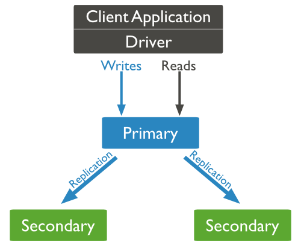

MongoDb 基础命令
MongoDB是一个基于分布式文件存储的数据库。由C++语言编写。旨在为WEB应用提供可扩展的高性能数据存储解决方案。MongoDB是一个介于关系数据库和非关系数据库之间的产品，是非关系数据库当中功能最丰富，最像关系数据库的。
NoSQL(NoSQL = Not Only SQL )，意即"不仅仅是SQL"。
1、A (Atomicity) 原子性
原子性很容易理解，也就是说事务里的所有操作要么全部做完，要么都不做，事务成功的条件是事务里的所有操作都成功，只要有一个操作失败，整个事务就失败，需要回滚。
比如银行转账，从A账户转100元至B账户，分为两个步骤：1）从A账户取100元；2）存入100元至B账户。这两步要么一起完成，要么一起不完成，如果只完成第一步，第二步失败，钱会莫名其妙少了100元。
2、C (Consistency) 一致性
一致性也比较容易理解，也就是说数据库要一直处于一致的状态，事务的运行不会改变数据库原本的一致性约束。
例如现有完整性约束a+b=10，如果一个事务改变了a，那么必须得改变b，使得事务结束后依然满足a+b=10，否则事务失败。
3、I (Isolation) 独立性
所谓的独立性是指并发的事务之间不会互相影响，如果一个事务要访问的数据正在被另外一个事务修改，只要另外一个事务未提交，它所访问的数据就不受未提交事务的影响。
比如现有有个交易是从A账户转100元至B账户，在这个交易还未完成的情况下，如果此时B查询自己的账户，是看不到新增加的100元的。
4、D (Durability) 持久性
持久性是指一旦事务提交后，它所做的修改将会永久的保存在数据库上，即使出现宕机也不会丢失。
一致性(Consistency) (所有节点在同一时间具有相同的数据)
可用性(Availability) (保证每个请求不管成功或者失败都有响应)
分隔容忍(Partition tolerance) (系统中任意信息的丢失或失败不会影响系统的继续运作)

CA - 单点集群，满足一致性，可用性的系统，通常在可扩展性上不太强大。
CP - 满足一致性，分区容忍必的系统，通常性能不是特别高。
AP - 满足可用性，分区容忍性的系统，通常可能对一致性要求低一些。
在mongodb中基本的概念是文档、集合、数据库
文档是mongodb中的最核心的概念，是其核心单元，我们可以将文档类比成关系型数据库中的每一行数据。
多个键及其关联的值有序的放置在一起就是文档。在mongodb中使用一种类json的bson存储数据。
bson数据可以理解为在json的基础上添加了一些json中没有的数据类型。
数据类型: string、integer、double、null、array、object、objext IDs
集合就是一组文档的组合。如果将文档类比成数据库中的行，那么集合就可以类比成数据库的表
Capped collections 就是固定大小的collection
元数据信息：在MongoDB数据库中名字空间
dbname.system.namespaces 列出所有名字空间。
dbname.system.indexes 列出所有索引。
dbname.system.profile 包含数据库概要(profile)信息。
dbname.system.users 列出所有可访问数据库的用户。
dbname.local.sources 包含复制对端（slave）的服务器信息和状态。
文档的数据结构和JSON基本一样。
所有存储在集合中的数据都是BSON格式。
BSON是一种类json的一种二进制形式的存储格式,简称Binary JSON
常用命令
db.newdb 创建数据库
db.newdb.insert({'name':'mongoDB learning'})
show dbs
db
use newdb
db.dropDatabase()
db.collection.drop()
show tables
db.collection_name.insert(document)
db.col.find().pretty()
db.col.save(document)
文档的更新
db.collection.update(
{query},
{update},
{
upsert: boolean,
multi: boolean,
writeConcern: document
}
)
query : update的查询条件，类似sql update查询内where后面的。
update : update的对象和一些更新的操作符（如$,$inc...）等，也可以理解为sql update查询内set后面的
upsert : 可选，这个参数的意思是，如果不存在update的记录，是否插入objNew,true为插入，默认是false，不插入。
multi : 可选，mongodb 默认是false,只更新找到的第一条记录，如果这个参数为true,就把按条件查出来多条记录全部更新。
writeConcern :可选，抛出异常的级别。
eg:db.col.update({'title':'MongoDB 教程'},{$set:{'title':'MongoDB'}},{multi:true})
save() 方法通过传入的文档来替换已有文档
只更新第一条记录：
db.col.update( { "count" : { $gt : 1 } } , { $set : { "test2" : "OK"} } );
全部更新：
db.col.update( { "count" : { $gt : 3 } } , { $set : { "test2" : "OK"} },false,true );
只添加第一条：
db.col.update( { "count" : { $gt : 4 } } , { $set : { "test5" : "OK"} },true,false );
全部添加加进去:
db.col.update( { "count" : { $gt : 5 } } , { $set : { "test5" : "OK"} },true,true );
全部更新：
db.col.update( { "count" : { $gt : 15 } } , { $inc : { "count" : 1} },false,true );
只更新第一条记录：
db.col.update( { "count" : { $gt : 10 } } , { $inc : { "count" : 1} },false,false );
删除
db.collection.remove(
{query},
{
justOne: boolean,
writeConcern: document
}
)
query :（可选）删除的文档的条件。
justOne : （可选）如果设为 true 或 1，则只删除一个文档。
writeConcern :（可选）抛出异常的级别。
db.col.remove({}) 删除全部
查找
"key":value
key:{$lt:50}
key:{$lte:50}
key:{$gt:50}
db.col.find({"likes":{$ne:50}}).pretty()
db.col.find({key1:value1, key2:value2}).pretty() and操作
db.col.find({$or:[{"by":"菜鸟教程"},{"title": "MongoDB 教程"}]}).pretty() or 操作
db.col.find({"likes": {$gt:50}, $or: [{"by": "菜鸟教程"},{"title": "MongoDB 教程"}]}).pretty()
db.col.find({"title" : {$type : 2}})
db.COLLECTION_NAME.find().limit(NUMBER)
db.col.find({},{"title":1,_id:0}).limit(2)
db.col.find({},{"title":1,_id:0}).limit(1).skip(1) 只会显示第二条文档数据
排序
sort()方法可以通过参数指定排序的字段，并使用 1 和 -1 来指定排序的方式，其中 1 为升序排列，而-1是用于降序排列
db.COLLECTION_NAME.find().sort({KEY:1})
db.col.find({},{"title":1,_id:0}).sort({"likes":-1})
索引
db.COLLECTION_NAME.ensureIndex({KEY:1}) 升序
db.col.ensureIndex({"title":1,"description":-1}) 复合索引 降序
mongoBD 聚合
MongoDB中聚合的方法使用aggregate()。
db.mycol.aggregate([{$group : {_id : "$by_user", num_tutorial : {$sum : 1}}}])
$sum $avg $min $max
管道
db.articles.aggregate( [
{ $match : { score : { $gt : 70, $lte : 90 } } },
{ $group: { _id: null, count: { $sum: 1 } } }
] );
$match用于获取分数大于70小于或等于90记录，然后将符合条件的记录送到下一阶段$group管道操作符进行处理。
副本集
mongodb的复制至少需要两个节点。其中一个是主节点，负责处理客户端请求，其余的都是从节点，负责复制主节点上的数据。 mongodb各个节点常见的搭配方式为：一主一从、一主多从。 主节点记录在其上的所有操作oplog，从节点定期轮询主节点获取这些操作，然后对自己的数据副本执行这些操作，从而保证从节点的数据与主节点一致。

mongod --port "PORT" --dbpath "YOUR_DB_DATA_PATH" --replSet "REPLICA_SET_INSTANCE_NAME"
以上实例会启动一个名为rs0的MongoDB实例，其端口号为27017。
启动后打开命令提示框并连接上mongoDB服务。
在Mongo客户端使用命令rs.initiate()来启动一个新的副本集。
我们可以使用rs.conf()来查看副本集的配置
查看副本集状态使用 rs.status() 命令
rs.add("mongod1.net:27017") 添加副本集成员
MongoDB中你只能通过主节点将Mongo服务添加到副本集中， 判断当前运行的Mongo服务是否为主节点可以使用命令db.isMaster()
mongoDB 分片

Shard: 用于存储实际的数据块，实际生产环境中一个shard server角色可由几台机器组个一个replica set承担，防止主机单点故障 Config Server: mongod实例，存储了整个 ClusterMetadata，其中包括 chunk信息。 Query Routers: 前端路由，客户端由此接入，且让整个集群看上去像单一数据库，前端应用可以透明使用。
监控
mongostat\mongotop \mongotop --locks